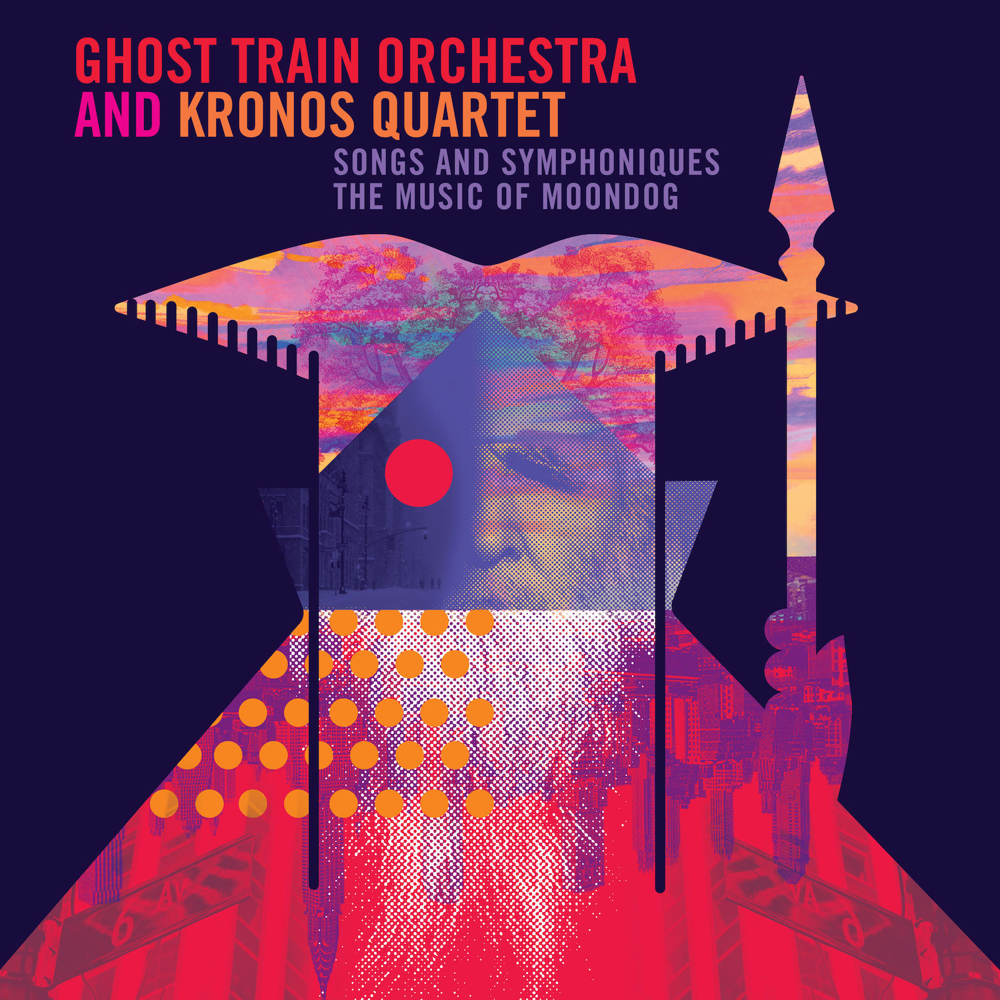

Back to discography

SONGS AND SYMPHONIQUES: THE MUSIC OF MOONDOG
Ghost Train Orchestra and Kronos Quartet
Cantaloupe Records, 2023
Winner of Preis der deutschen Schallplattenkritik (German Record Critics' Award)
The album features the music of Moondog, the blind composer who lived on the streets of Manhattan and became a fixture on 6th Avenue, dressed in striking Viking attire while selling his records and reciting poetry. His beautiful and haunting madrigals, songs, and symphoniques inspired the minimalists Philip Glass and Steve Reich, who called Moondog “the godfather of minimalism.”